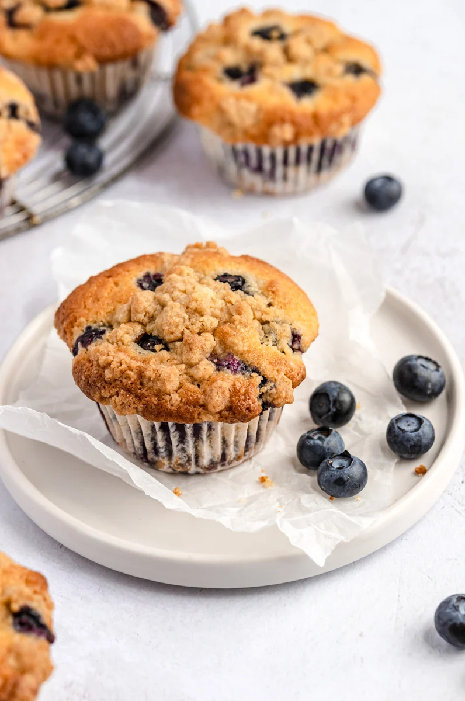

Blueberry Muffins

Description
The best bakery style blueberry muffins you'll ever make! These incredible blueberry muffins with crumb topping are moist, perfectly sweet and bursting with juicy blueberries. You'll never need another blueberry muffin recipe!
- 1/2 cup all purpose flour
- 1/2 teaspoon cinnamon
- 1/3 cup packed brown sugar
- 3 tablespoons butter, melted
- 1/2 cup butter
- 1 cup sugar
- 2 large eggs, at room temperature
- 1/2 cup milk (any milk should work here)
- 1/2 tbsp vanilla extract
- 1/2 tsp almond extract
- 2 cups all purpose flour
- 2 tsp baking powder
- 1/4 tsp salt
- 2 cups fresh or frozen blueberries
- 2 tbsp all purpose flour
Steps
- Preheat the oven to 400 degrees F. Line a 12 cup muffin pan with liners and spray them with cooking spray.
- Brown your butter: add ½ cup butter to a large saucepan and place over medium heat. The butter will begin to crackle, and then eventually foam. Make sure you whisk constantly during this process. After a couple of minutes, the butter will begin to brown and turn a nice golden amber color on the bottom of the saucepan. Continue to whisk and remove from heat as soon as the butter begins to brown and give off a nutty aroma. Immediately transfer the butter to a medium bowl to prevent burning, making sure you scrape all the brown butter bits from the bottom of the pan. Set aside to cool for 10 minutes or until cool enough to touch.
- While the brown butter cools, make the topping: in a medium bowl, mix together the flour, cinnamon and brown sugar. Add in the melted butter and stir together with a fork until it begins to form into crumbles and resembles pea-sized clumps. You may need to use your hands/fingers to form into nice crumbles. Cover the bowl with plastic wrap and place in the fridge until ready to use.
- In a large bowl, whisk together flour, baking powder and salt. Set aside.
- In a separate large bowl, beat together the brown butter and sugar. Slowly add in eggs, one at a time. (It’s very important your eggs are at room temperature here, so be sure to run them under warm water for 1-2 minutes until no longer cold.) Next add in your milk, vanilla, and almond extract, mixing until the wet ingredients are smooth and well combined. Slowly add in dry ingredients, mixing with a wooden spoon until just combined. Do not overmix.
- Add blueberries and 2 tablespoons of flour to a medium bowl and stir to coat the blueberries with flour. This is so the blueberries do not fall to the bottom of the muffins when baking. Gently fold blueberries into the muffin batter.
- Divide batter evenly between the prepared muffin pan. Sprinkle the topping on top. Bake for 23-28 minutes or until the tester comes out of the middle clean. Allow muffins to cool for 5 minutes in the pan before removing. Makes 12 muffins.